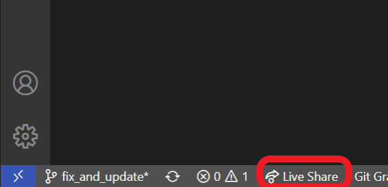
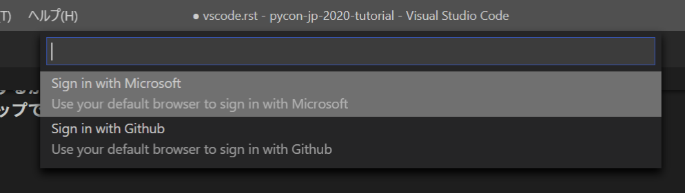
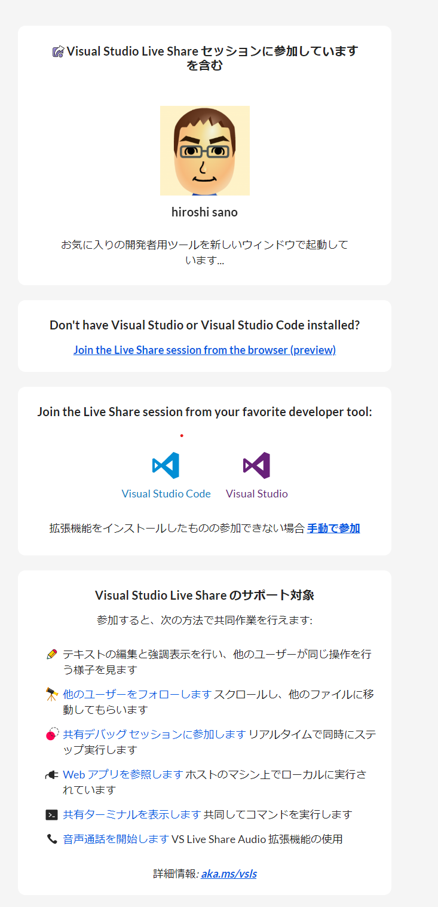

VS CodeとLive Shareの設定¶
利用する拡張機能¶
このチュートリアル作成中に利用した拡張機能を紹介します。
注釈
Python拡張機能をインストールすると、Python実行環境（インタプリタ）が促される場合があります。
prepare.rst でPyhtonの仮想環境をインストールされていると自動的に仮想環境が設定されます。
もし設定されない場合は、次の「ワークスペースの設定」で .vscode/settings.json に以下を設定します。今回は相対パスの例ですが、自動的に設定された場合は絶対パスで設定されることがあります。
// Windows 10の場合
{
"python.pythonPath": ".venv\\Scripts\\python.exe"
}
// macOSの場合
{
"python.pythonPath": ".venv/bin/python"
}
ワークスペースの設定¶
VS Codeにはワークスペースという概念があります。ディレクトリを開くとそのディレクトリをワークスペースとして認識し、VS Codeのアプリとしての設定（ユーザー設定）とは別に、ワークスペースごとに設定を変更できます。
ワークスペースの設定は .vscode/settings.json を作成することで有効にできます。
Python拡張機能で利用できる設定を追加します。リンターやフォーマッターの有効化をしています。.vscode/settings.json に以下の設定を追加します。
{
// この部分にpython.pythonPath があります。
"python.formatting.provider": "black",
"editor.formatOnSave": true,
"python.linting.pylintEnabled": false,
"python.linting.flake8Enabled": true,
"python.linting.enabled": true,
}
この設定は、いくつかのPythonパッケージの依存があります。これらはpip経由でインストール可能で、 チュートリアル開始前の準備 -「ローカル開発環境の用意」の仮想環境作成時にインストールしています。ここではflake8とblackというツールを利用しています。
リンターとフォーマッター¶
PythonではPEP8と呼ばれるコーディング規約があります。PEP8に準拠することで、複数人で書かれたPythonのソースコードスタイルを統一して、可読性を上げたり、修正や機能追加をしやすくすることが出来ます。
ですが、人がPEP8を覚えたり確認する作業は大変なことです。そのため、コーディング規約を自動的にチェックしたり、修正するツールがあります。
自動的にチェックするツールをリンター（Linter）と呼びます。静的解析手法とも呼びます。リンターはソースコードをインタプリタやコンパイラなどの実行環境ではなく、コードの内容を元にエラーやコーディング規約と違いがないかを調べて指摘をするツールです。
flake8はPEP8のチェック、コードのエラーを警告、プログラムの複雑性のチェック という機能があるツール三種類をひとまとめで利用できるラッパーになります。
フォーマッター（Formatter）は、ソースコードのスタイルを自動的にコーディング規約に修正するツールです。
PEP8を人が事細かに守るのは難しいものです。人それぞれでソースコードの書き方の違いもあります。それらを決めたスタイルを元に自動的に修正することで、ソースコードの可読性を維持できます。
blackはPEP8のフォーマッターですが、PEP8では言及されていない表現についてもBlack code styleを元にソースコードの整形を行います（つまりblackも一つのコードスタイルです）
blackのコードスタイルについては公式に記載されています: black/the_black_code_style.md at master · psf/black
Live Shareによるチュートリアルサポート¶
Visual Studio Live Shareは、Visual StudioやVS Codeでソースコードをリアルタイムに複数人で共有、編集しデバッグができます。
概要 - Visual Studio Live Share - Visual Studio Live Share | Microsoft Docs
チュートリアルでは、各参加者のVS Codeの状況を講師とTAがリアルタイムでコードのデバッグを手助けできます。
この章ではサポートを受けたい方向けに、Live Shareのセットアップ方法を紹介します。
Live Shareは参加者のVS Codeの状況を講師、TAがリアルタイムで見ることができ、操作して共同で作業が可能です。
コラボレーションセッションの作成¶
各参加者皆さんのVS Codeで、Live Shareのコラボレーションセッションに講師とTAは参加する必要があります。その時に必要な招待URLを作成していただく必要があります。
Live Share拡張をインストールすると、自動的にWelcomeタブが表示されますが閉じてもらって構いません
VS Codeウィンドウの下部にあるLive Shareマークをクリックして、GitHubアカウントでログインします。
 その後自動的にコラボレーションセッションがスタート、クリップボードへ招待リンク（URL）がコピーされるので、控えてください。

最後に講師へURLを伝えてください。伝え方はチュートリアル当日に方法をお伝えします。
URLをブラウザで開くとこのようにブラウザでの参加方法が表示されます。
チュートリアル当日の流れ¶
当日は 8/30 9:30 から環境構築の相談時間を設けます。その時に「コラボレーションセッションの作成」の作業をしてもらい、コラボレーションの招待リンクを伝えてください。